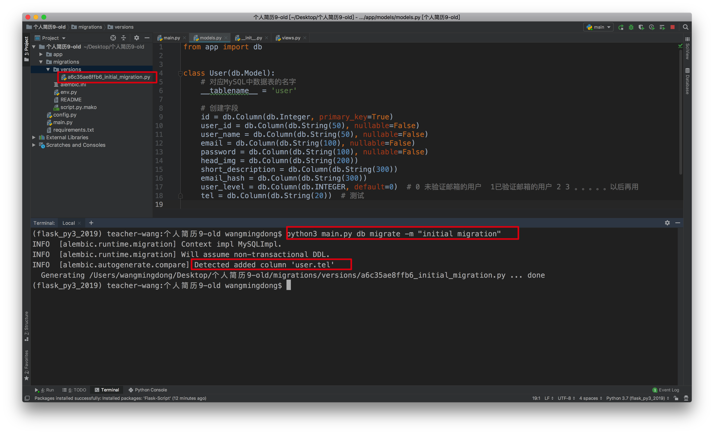
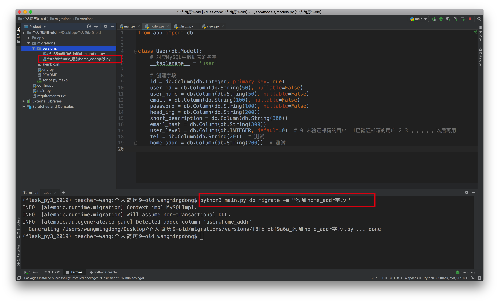
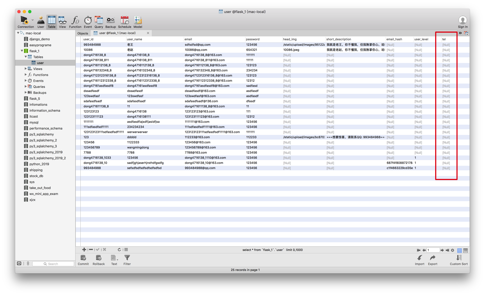

数据库迁移
1. 目的
开发程序的过程中，会发现有时需要修改数据库模型，而且修改之后还需要更新数据库。
之前我们使用SQLAlchemy，它能够删除数据库或者创建数据库。也就是说之前在开发过程中，如果遇到修改数据库的时候，我们的做法有2种：
- 先删除旧表然后重新生成。不过这样做会丢失数据库中的所有数据
- 手动操作数据库（例如使用SQL修改数据库），然后再修改模型类。这样较为麻烦，容易出错
更新数据库的设计更好方法是使用数据库迁移框架
源码版本控制工具（GIT后面讲解）可以跟踪源码文件的变化，类似地，数据库迁移框架能跟踪数据库模型的变化，然后增量式的把变化应用到数据库中。
SQLAlchemy 的主力开发人员编写了一个迁移框架，称为Alembic。除了直接使用Alembic 之外，Flask 程序还可使用Flask-Migrate（这个扩展对Alembic 做了轻量级包装，并集成到Flask-Script 中，所有操作都通过Flask-Script 命令完成
2. 安装
安装migrate
方法1：命令行安装
pip3 install flask-migrate
方法2：pycharm安装
flask是可以用更多的命令来操作的，有个叫做flask_script的模块，也就是说如果想用数据库迁移，那么就需要在安装flask-script
安装flask-script
3. 使用
这个扩展的初始化方法如下所示：
from flask_script import Manager
from flask_migrate import Migrate, MigrateCommand
manager = Manager(app)
migrate = Migrate(app, db)
manager.add_command('db', MigrateCommand)
# manager.run()
为了导出数据库迁移命令，Flask-Migrate 提供了一个MigrateCommand 类，可附加到Flask-Script 的manager 对象上。在这个例子中，MigrateCommand 类使用db 命令附加。
3.1 创建仓库
在维护数据库迁移之前，要使用init 子命令创建迁移仓库：

这个命令会创建migrations 文件夹，所有迁移脚本都存放其中。
一般我们会把数据库迁移仓库中的文件要和程序的其他文件一起纳入版本控制。
3.2 创建迁移脚本
数据库迁移用迁移脚本中有两个函数，分别是:
upgrade()函数把迁移中的改动应用到数据库中downgrade()函数则将改动删除
Alembic 具有添加和删除改动的能力，因此数据库可重设到修改历史的任意一点。
注意：
Alembic自动创建的迁移会根据模型定义和数据库当前状态之间的差异生成upgrade() 和downgrade() 函数的内容。自动创建的迁移不一定总是正确的，有可能会漏掉一些细节。自动生成迁移脚本后一定要进行检查。
migrate 子命令用来自动创建迁移脚本：
上图中，因为当前的数据库模型类与数据库中的字段是完全一致的，所以没有生产迁移脚本。如果当前MySQL数据库中没有对应的表，此时就会生产第1个版本的数据库迁移文件。
下面我们故意的修改数据库模型类，以便于看到有数据库迁移脚本
发现模型类与数据库有不相同的地方之后，就在versions文件夹下生成了响应的数据库迁移脚本

3.3 更新数据库
检查并修正好迁移脚本之后，我们可以使用db upgrade 命令把迁移应用到数据库中：
发现数据库中真的多了一个字段

尝试downgrade
添加新的字段

执行downgrade

再执行一次downgrade

执行一次upgrade

发现，当有2个版本可以升级时，只需要执行一次的upgrade，就可以将数据库升级到最新的样子
指定升级到哪个版本
请将上述的最新版数据库，降级到最初的样子，然后使用upgrade可以指定升级到哪个版本
